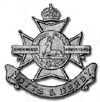
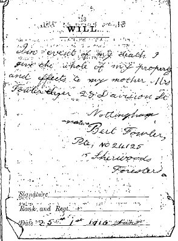
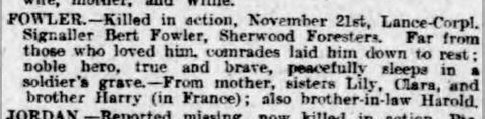
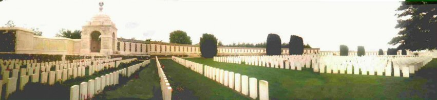
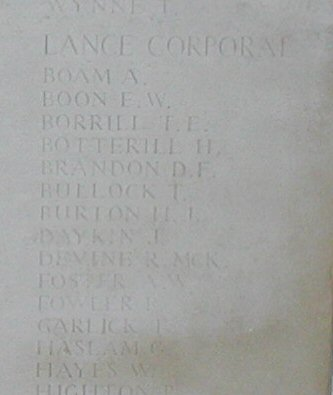

Bertie Fowler, 1897-1917

Bertie or Bertram Fowler was born in Nottingham in 1897, second son of James and Eliza Fowler and brother to May . He grew up in Sneinton and unfortunately we know little about his early life. We do know from the 1911 census that when he was 14 and working as a printers labourer. At the outbreak of World War One in August 1914 he was 17 years old. Bertie enlisted in early March 1915 at the Mechanics Institute, into the Sherwood Foresters (Notts & Derby Regiment) and was posted to the 15th Battalion as Private 24125.


The 15th (Bantam) Battalion had been formed in February 1915 and was made up initially of men who although fit were below the normal minimum service height of 5' 3". As the battalion was raised through the Spring of 1915 they were billeted around Nottingham. There were no uniforms available so they were drilled in their civilian clothes. As uniforms became available they were issued from Battalion HQ in the Lace Market. Training continued throughout late Spring into June.


On 22 June they were given a grand send off from Nottingham Market Square and marched to Victoria Station enroute to Masham in Yorkshire to join the 105th Brigade, part of the 35th (Bantam) Division. The men were accommodated in tents. The Battalion next moved to Bulford Camp, Tidworth Barracks on Salisbury Plain. They were still here by Christmas of 1915, training, drilling, route marching and digging trenches. As a signaller Bert Fowler would have been trained in specialist skills. He would have learnt how to use the heliograph, semaphore, morse code and telephones. After a couple of false starts the Battalion left Tidworth. Between 29 January and 1 February 1916 they arrived in France, the Transport via Southampton and Havre and the Battalion in two trains via Folkstone and Boulogne.

For many, including Bert, it was probably their first sight of the sea. On arrival in France the 15th Sherwood Foresters moved in two parties to Renescure beyond St Omer. On 7 March they marched to Le Touret for instruction in the trenches and receive their first casualties. On 26 March they relieved the 2nd Scottish Rifles in the Fauquissant sector. Through April 1916 the battalion spent time in and out of the trenches at Laventie. In May the battalion spent the first half of the month in Divisional Reserve. From then they were again in and out of the trenches alternating with the 14th Gloucesters. On 30 May they were involved in their first serious engagement as they received heavy bombardment and hand to hand trench fighting, sustaining many losses. After a quiet June the battalion move south by train in July 1916 to join the new offensive in the Somme. The battalion were alongside the French near Maltz Horn Farm, half a mile south of Trones Wood. In heavy rain and under intense bombardment the 15th Sherwood Foresters entered the line on the night of 16/17 July. On 19 July the battalion was involved in an assault on German lines between Maltz Horn Farm and Arrow Head Copse.
The following adjusted extract is from "The Blast of War" :
"On the evening of the 19th July 1916 the Divisional Commander arrived at Brigade HQ, fresh from a Corps conference and ordered that the Brigade should capture some 1,000 yards of enemy trench from Maltz Horn Farm northwards, coordinated with a French attack. The task was allocated to the Foresters and appears to have been a desperately difficult venture from the outset. The frontage was far too wide for a battalion assault, observed artillery support could not be provided where it was needed most, and little time was given to troops that were already exhausted, hungry and under heavy artillery bombardment.
Before the Attack Order was issued the officer commanding decided that only two companies were fit to attack, the other two being badly shaken by shelling and having been in gas masks for four hours under tear and chlorine gas shell fire. Two companies of 23rd Manchester’s were sent to support the attack. It was about this time that a corporal from the Sherwoods took his section of seven men out of the line, having had no rations for three days and being unable to stand up to the strain. This caused a panicky retreat from some of the men. The corporal was arrested. He was subsequently Court-Marshalled, found guilty of leaving his post, and was shot by a firing squad on 17th August 1916.
Nevertheless the attack went on after dawn. Real limited success was briefly achieved."
The total cost to the Sherwood's was heavy; ten officers killed nine wounded; thirty nine other ranks killed, 146 wounded and 36 missing , but within a few days they were back in the line. By August 1916 the Division had moved into rest by train and route march. Despite being at rest they were given the task of providing working parties for the Royal Engineers. They re-entered the trenches at Maltz Horn on 22 August before finally leaving the Somme at the end of the month.
In September 1916 they moved to Arras and remained there into October and November. This was a period of shelling and raids. It was around this time that the problems of finding 'bantam' reinforcements in sufficient numbers became too difficult; the 15th Foresters was redesignated a normal 'service' battalion and fought as such until the end of the War
(Extracts fro the Battalion War Diary)
January 1917 - Spent whole month in billets at Dainville . Activities at this time included rest, training, inspections, assimilation of new drafts, and providing working parties.
February 1917- During this month, the Battalion moved as part of the relocation of the Division to an area south of the River Somme. Geographically, this is the Plain of Santerre. It is flat arable land and largely featureless, save for being dotted with villages. The move initially took the Battalion south-west, to some villages lying north and west of Amiens , before the move into the Somme area on 18th February. This is not the area in which the BEF fought the 1916 Battle of the Somme, which is to the north of the river, but had been in occupation by the French Army. The move of the Division followed an agreement for the British to extend its line.
1st - Remained at Dainville , until 5th
6th - Moved to Villers l’Hopital
7th - Moved to Candas
8th - Moved to St Vaast en Chaussee
9th - Remained at St Vaast , carrying out a Company reorganisation, and Platoon training, until 17th
18th - : March to Flesselles , then by train to Marcelcave , then march to Wiencourt
19th - In billets in Wiencourt
20th - March to Caix , then into huts at Camp des Ballons
21st - Moved to take over front line from French battalion in Chilly sector. Entered Deux Cimetieres Communication Trench at 4.30pm, only to find it impassable because of mud. Did not complete relief until 11.30am the next day.
22nd - : With no revetments and no duckboards, the trenches were a morass. Movement had to be by going over the top. Much work to do.
24th - Two front line Companies moved back into reserve at Tranchee du Paris
25th - Clearing trenches, until 28th.
After a freezing January the Division marched to the area of Doullens and passed under the control of IV Corps. The Foresters relieved the French in the Chilly sector. Frost then turned to mud and trenches were flooded. Trench foot became a problem and gas attacks and raids were common.
March 1917 - During February and March 1917, the German Army made a strategic withdrawal of several miles on the Somme front, to a newly prepared and immensely strong set of positions known to the British as the Hindenburg Line. After cautious initial probing, the BEF followed up, crossing ground deliberately devastated by the enemy. The 35th Division began to advance in mid-March, and after approaching the new line, dug in to create an entirely new position. Behind the lines, the BEF worked feverishly to restore captured railway lines and roads, to supply the new positions. Much hard labour was involved.
1st - Relieved the 14th Glos in the Chilly sector
2nd - In the trenches, until 3rd
4th - Relieved by 17th Lancs Fusiliers, and moved to billets in Vrely
5th - Moved to Camp des Ballons , remaining until 12th
13th - Marched to Rosieres ; remained until 17th, providing many working parties
17th - Relieved the 14th Glos in the Chilly sector
On 17 March there was a tactical German withdrawal and the battalion was ordered to advance to occupy the abandoned enemy trenches. There was however widespread devastation and the Brigade was put to work repairing roads and bridges.
18th - Ordered to advance to occupy the German front and support lines. 2pm ordered to continue to advance to Vieux Boche and Hyencourt le Petit
19th - Withdrawn to Vermandovillers for salvage work
20th - Rest
21st - Marched to Rosieres for work on Rosieres-Chaulnes railway line; remained on this activity until 31st, moving to Morlemont on 28th for work on Nesle-Ham line.
April 1917 - During this month, the Battalion moved into unfamiliar positions in the Saint-Quentin area.
1st - Continuing to work on Ham-Nesle railway line, until 11th
12th - March to Tertry
13th - In reserve, providing working parties for road repair, until 15th
16th - Brigade relief of 104th Brigade. Bn relieved 17 Lancs Fusiliers, in a wood at Mon de Garde ; digging defensive line at the southern end of Fresnoy le Petit , until 20th
21st - Moved into outpost line, north of Gricourt. Bn HQ placed in quarry at M27c1.5; remained until 25th; no incidents
26th - Relieved; placed to work on a defensive line, until 30th
30th - 11pm Relieved by 19 Durham LI, moved into billets at Tertry
May 1917
1st - Remained in billets, until 7th
8th - Relieved 19 DLI in outpost line
In May there was a sudden change in the weather. Spring suddenly arrived and contributed to a more positive feeling. As part of the continuing pressure on the enemy the Foresters planned and carried out a major raid on Les Trois Sauvages Farm .
9th - An attack was carried out at 4.30pm by four Platoons, to drive the enemy out of positions at Les Trois Sauvage . Reported successful.
10th - Strengthening new posts in positions captured yesterday; remained until 12th
12th - Relieved by 14 Glos, and moved into support. Provided working parties, until 15th
15th - Carried out a raid on Les Trois Sauvage to destroy strong points and take prisoners. Made good progress initially but held up on thick wire east of the Farm itself. 40 casualties.
17th - Relieved 14 Glos in outpost line
19th - Relieved by 1st Bn, 72nd regiment of 87th French Territorial Division. Heavy shelling during relief but no casualties. Moved to Tertry . Rest and refit, until 23rd
23rd - March to Peronne , remaining in billets until 25th
25th - March to T empleux-la-Fosse , remaining on Company and Battalion training until 2nd June. On 28th, 400 men were guests of 1st Bn Sherwood Foresters, who were encamped at Aizecourt le Haut .
June 1917
2nd - Relieved the 17th West Yorks in support trenches at Villers-Guislain ; remained in position until 10th, providing working parties.
10th - relieved the 14th Glos in front line trenches. Continued to work on trenches. No incidents except as shown below, until 18th.
14th - A wounded prisoner captured and identified.
18th - Relieved by the 18th Lancashire Fusiliers, and marched to camp north-west of Heudecourt. Remained here, engaged in training, sports activities, concerts etc, until 26th.
26th - Moved to relieve the 19th DLI in Brigade Reserve in trenches in Gauche Wood sector. Provided working parties until 30th.
30th - Moved by Decauville (light, narrow-gauge) railway from Heudecourt , to camp at Villers-Faucon . Remained here until 6th July.
July 1917
6th - Two Companies relieved some of the (dismounted) 16th Lancers in Sunken Road and Heythorp Post.
7th - Remainder of Battalion moved to Cruciform Post, Catelet Post, Bird Cage, Quarries, Bird Post and Grafton Post . (These names reflect the changing tactics of defence on the Western Front. The continuous, thickly-manned, trench line was being abandoned in favour of a more elastic defence based on strong points arranged to give covering fire to each other, arranged in depth).
8th - Provided covering parties for Brigade working parties. Did same for several days, until 13th.
13th - Enemy attempted to raid the Bird Cage . There was very heavy artillery fire on the Sunken Road and the Quarries. 23 casualties among Other Ranks. 1 enemy dead found on our wire.
14th - Day spent repairing damage.
15th - Relieved by the 20th Lancashire Fusiliers, and moved via Villers-Faucon to Aizecourt la Bas . Remained in billets here resting, training and in sports activities until 23rd.
23rd - Relieved the 18th Highland LI in C2 subsector (near Lempire ). Remained here until 1st August without incident.
August 1917 - Much of the time spent at camp in the early part of this month was spent in training and preparation for an attack planned to knock out a dangerous position in the German lines, called The Knoll .
1st - Relieved by the 17th Royal Scots in the Lempire sector, and moved to camp at Aizecourt. Remained there until 17th.
17th - Moved via Longasvesnes and Villers-Faucon to near St Emilie . Camped at 62cE23a and b.
18th - Moved to assembly position for an attack on the Knoll , moving via Ronssoy-Lempire-Tombois Farm road, to Fleeceall Post and Fag Lane trenches to the Old Barrier on the Sunken Road. [It is fascinating to note that the trench map 62cNE2-4A-Epehy, which covers this area in detail, shows all of these posts. German trenches facing the Battalion were given the names Crellin Avenue and Cochran Avenue, the CO and 2-I-C of the Battalion at this time. A small redoubt on the Knoll position was given the name Smissen Post, after the attached Chaplain].
19th - A successful attack. Began at 4am and took trenches, consolidated the positions gained and built a bombing block. Casualties 25 killed, 53 wounded, 2 died of wounds and 5 missing.
20th - Relieved by the 14th Glos, moved to St Emilie . Remained for three days.
24th - Relieved the 15th Cheshires at the Knoll . Very heavy enemy shelling, when they attacked at Gillemont Farm . Casualties 19 killed, 44 wounded. Relieved during the night and moved back to St Emilie , where remained until 27th.
27th - Moved to Aizecourt , stayed until 1st September. On 31st August, inspected by GOC Corps.
September 1917
1st - Relieved the 17th Royal Scots in the Lempire sector, remaining in front line trenches until 6th.
2/3rd - 10pm, Wirk carried on. Covering party supplied to the 156th Cheshires. Enemy bombardment from about 11pm to 12.40am. Casualties - 1OR.
3/4th - 9.30pm Inter Company Relief. Z Coy relieving Y Coy in E and F posts. About 8.30pm an enemy balloon over Gillemont was struck by lightening and came down in flames.
6th - 9.30pm the Battalion was relieved by the 15th Cheshires, and went into shelters and billets previously occupied by them in Lempire and Sand Bag Alley (trench).
7th - 11th - Wiring parties sent out by Coys alternately, 1 Coy on duty each night with orders in case of SOS or other alarm, to occupy Yak and Zebra, Lempire Central and Lempire East Posts .
11th - The Battalion was relieved by the 20th Lancashire Fusiliers, and went into billets in Villers-Faucon .
11th - 18th Billeted in the Village. Company Training. Musketry - Improvement of ranges and Revetting practice carried on. A transport inspection was held on Sept 13th at 3pm. The Battalion Transport won first prize. Football match and Entertainment on 16th. There was a demonstration of Trench digging and revetting at Aizecourt le Bas .
18th - 7pm the Battalion relieved by the 17th West Yorks and one Coy of the DLI in the Right Sub-Sector as follows:- W Coy Right Front Line - Y Coy Left Front LIne. X Coy in Heythorp and Cruciform Posts - Z Coy in Priel Bank from No 13 Copse to Catelet Copse.
19th - 26th - The Battalion had a quiet time in the line on the whole. On the night of the 22nd/23rd the enemy shelled heavily along the line from Birdcage to Ossus Posts from 11-11.45pm. InterCompany relief. X Coy relieving w Coy and Z Coy relieving Y Coy.
22nd - In the morning of 22nd about 8.45 1 NCO was killed near St Emilie by a bomb from an aeroplane while bringing two horses up to Malassise Farm. 1 horse was also killed. Work done - revetting and improving trenches and posts.
26th - The Battalion was relieved by the 16th Cheshires and disposed as follows:- W Coy Meath and Limerick Posts - X Coy 14 Willows and Z Coy Kildare Post. Battalion HQ in Vaughan Bank near Epehy . Lewis gun classes commenced. Working parties supplied..
30th - The Battalion was relieved by “D” Battalion, 166th Brigade, and marched by Coys to Aizecourt le Bas , halting by way at Villers Faucon . The relief was completed without incident
October 1917 - During this month, the 35th Division left the Somme area for the first time since they arrived in France. The BEF had launched a very large offensive in Flanders on 31st July 1917; a strategic initiative to break through the German lines in front of Ypres, and to achieve re-capture of the Belgian ports and coast. This offensive soon ran into difficulties. The worst summer weather in Flanders for decades turned much of the Ypres area to deep mud, and the infantry ran into an unsuspected deep array of enemy concrete pillboxes holding machine gun posts. This unfortunate offensive, which was never to break through the enemy, has long been known as the Battle of Passchendaele, after a village at the extreme extent of the British advance, which was captured in November. In October, it was the turn of 35th Division to move into this appalling affair.
1st - Battalion conveyed to Peronne in Motor Lorries. Transport moving by road.
2/3rd - Resting and refitting. Battalion entrained at Peronne at 12 midnight 2/3rd inst en route for XVII Corps area, and detrained at Arras at 4.30am on the 4th inst, proceeding by march route into billets at Warlus . Part of the Battalion Transport proceeded by road halting on the night of 3rd inst at Bampaume and continuing march on 4th inst arrived at Walrus at 12 noon.
3rd - 12th - Reorganisation of Coys and Battalion Training.
13th - Battalion entrained at Arras station at 12.54pm and detrained at Cassel at 8.30pm and marching to billets at Arneke .
15th - Battalion (less Transport) entrained at Arneke at 12 noon and detrained at Proven at about 2.30pm marching to D4 Camp.
16th - Entrained at Proven at 12 noon and detrained at Elverdinge . The Battalion relieved the 1st Scots Guards in Rugby Camp . Transport moved by road and occupied camp near Woesten .
During this period the battalion was involved in preparations for the forthcoming attack and helping to prepare artillery positions in the last of the fine weather.
17-20th - Reconnaissance of the line south of Houthulst Forest preparatory to attack. Furnishing of work parties.
20th - At 5pm Battalion moved to Gouvy Farm near Boesinghe.
24125 Lance Corporal Fowler died on Saturday 20th October 1917, killed in action at Gouvy Farm near Boesinghe , Belgium. He has no grave but is commemorated on the Tyne Cot Memorial, Zonnebeke, West-Vlaanderen, Belgium (Panel 99 to 102 and 162 to 162A). It is thought that he was killed during shelling. It may be that his body was buried at the time and lost due to subsequent shelling.



The Sherwood Foresters Panel
showing Lance Corporal B Fowler